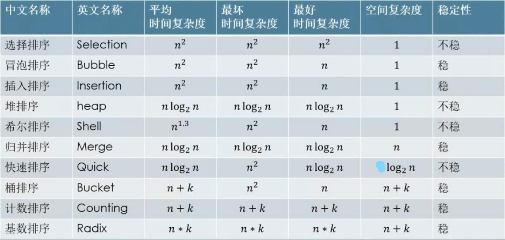

常见排序算法

排序的稳定性：排序过程中，具有相同关键字经过排序后，相对的顺序保持不变，则是稳定的；意义：在对象排序中，对其某个属性进行排序后，希望保持其他属性的顺序不发生改变，则需要稳定的排序算法。
选择排序：从数组开始处遍历，找到剩余未遍历数组中的最小值，与本次遍历第一个数交换，重复此过程，每一次内层循环找到未遍历数组的最小值，外层循环中将一个最小值排好序。
1
2
3
4
5
6
7
8
9
10
11public static void sort(int[] nums){
for(int i = 0; i < nums.length - 1; i++){
int minPostion = i;
for(int j = i+1; j < nums.length; j++){
minPostion = nums[minPostion] > nums[j] ? j :minPostion;
}
swap(nums, minPostion, i);
}
}
冒泡排序：内层循环两两比较，将大的数放在后面，最终结果是一次内层循环将一个最大的数排好顺序，与选择排序恰好相反。
1
2
3
4
5
6
7public static void sort(int[] nums){
for(int i = nums.length-1; i > 0; i--){//外层循环决定最大的数的位置
for(int j = 0; j < i; j++){
if(nums[j] > nums[j+1]) swap(nums, j, j+1);
}
}
}
插入排序：外层循环遍历数组（选择某张牌），内层循环将外层循环选择的牌插入到前面已经排好序的牌中。
1
2
3
4
5
6
7public static void sort(int[] nums){
for(int i = 1; i < nums.length; i++){
for(int j = i; j > 0; j--){
if(nums[j] < nums[j-1]) swap(nums, j, j-1);
}
}
}插入排序在样本较小且基本有序时效率较高。
堆排序
1
2
3
4
5
6
7
8
9
10
11
12
13
14
15
16
17
18
19
20
21
22
23
24
25
26
27
28
29
30
31
32
33
34
35
36
37
38
39
40
41
42
43
44
45
46
47
48
49
50
51
52
53
54
55
56
57
58
59public class HeapSort {
//堆：满足“任一非叶子节点均大于（小于）等于其孩子节点”条件的完全二叉树，分为大根堆和小根堆
public static void main(String[] args) {
int[] test = {3,2,5,6,4,7,0,1,10,9,8};
sort(test);
for(int num:test){
System.out.print(" "+num);
}
}
public static void sort(int[] tree){
buildHeap(tree);
for(int j = tree.length - 1; j > 0; j--){
swap(tree,0,j);//将堆顶元素与末尾元素进行交换
adjustHeap(tree,0,j);//重新对堆进行调整
}
}
/**
* 创建大根堆
* @param tree
*/
public static void buildHeap(int[] tree) {
for(int i = tree.length/2 - 1; i >= 0; i--)//从第一个非叶子结点（完全二叉树中必为n/2-1）从下至上，从右至左调整结构
adjustHeap(tree, i, tree.length);
}
/**
* 堆化操作，将第i个节点与其孩子节点进行比较，将最大值放在位置i上；
* 递归进行堆化，以第i个节点为根的子树从上往下全部进行堆化
* @param tree
* @param i
* @param length
*/
public static void adjustHeap(int[] tree,int i,int length){
if(i >= length) return;//递归出口，孩子的下标大于等于数组长度返回
int leftChildIndex = 2*i + 1;//左孩子下标
int rightChildIndex = 2*i + 2;//右孩子下标
int maxIndex = i;//用一个变量来记录i, 2*i+1, 2*i+2三者中的最大值的下标
if(leftChildIndex < length && tree[maxIndex] < tree[leftChildIndex]) maxIndex = leftChildIndex;
if(rightChildIndex < length && tree[maxIndex] < tree[rightChildIndex]) maxIndex = rightChildIndex;
if(maxIndex != i){
swap(tree, i, maxIndex);
adjustHeap(tree, maxIndex, length);//递归进行堆化，以第i个节点为根的子树从上往下全部进行堆化
}
}
private static void swap(int[] nums, int i, int j) {
int temp = nums[i];
nums[i] = nums[j];
nums[j] = temp;
}
}
归并排序（Java对象排序使用，对象排序要求稳定性）
1
2
3
4
5
6
7
8
9
10
11
12
13
14
15
16
17
18
19
20
21
22
23
24
25
26
27
28
29
30
31
32
33
34
35
36
37
38
39
40
41
42
43/**
* 对数组的left至right这部分进行排序
* @param nums
* @param left
* @param right
*/
public static void sort(int[] nums, int left, int right){
if(left == right) return;
int mid = left + (right - left)/2;//防止整型溢出
sort(nums, left, mid);//对数组的左半部分排序
sort(nums, mid+1, right);//对数组的右半部分排序
merge(nums, left, mid+1, right);//合并数组的两半部分
}
/**
* 合并数组的任意两半部分（均有序的情况下）
* @param nums
*/
private static void merge(int[] nums, int left, int mid, int right){
int[] result = new int[right - left + 1];
int i = left, j = mid;
int k = 0;
while(i < mid && j <= right){
if(nums[i] <= nums[j]){
result[k++] = nums[i++];
}else result[k++] = nums[j++];
}
while(i < mid){
result[k++] = nums[i++];
}
while(j <= right){
result[k++] = nums[j++];
}
k = 0;
for(i = left; i <= right; i++){
nums[i] = result[k++];
}
}
快速排序（Java基础类型数据排序使用双轴快排）
1
2
3
4
5
6
7
8
9
10
11
12
13
14
15
16
17
18
19
20
21
22
23
24
25
26
27
28
29public static void sort(int[] nums, int leftBound, int rightBound){
if(leftBound >= rightBound) return;
int pivotIndex = partition(nums, leftBound, rightBound);//得到每一次划分后轴的位置
sort(nums, leftBound, pivotIndex-1);//对轴左边的部分继续进行划分
sort(nums, pivotIndex+1, rightBound);//对轴右边的部分进行划分
}
/**
* 一次划分将小于轴的数放在其左边，大于轴的数放在其右边
* @param nums
* @param leftBound
* @param rightBound
* @return pivotIndex(轴的位置)
*/
private static int partition(int[] nums, int leftBound, int rightBound){
int pivot = nums[rightBound];//将右边界的数定义为轴
int left = leftBound, right = rightBound - 1;
while(left <= right){
while(left <= right && nums[left] <= pivot) left++;//从左往右找到第一个比轴大的数
while(left <= right && nums[right] > pivot) right--;//从右往左找到第一个比轴小的数
if(left < right) swap(nums, left, right);//交换
}
swap(nums, left, rightBound);//交换nums[left]与轴则完成一次划分
return left;
}